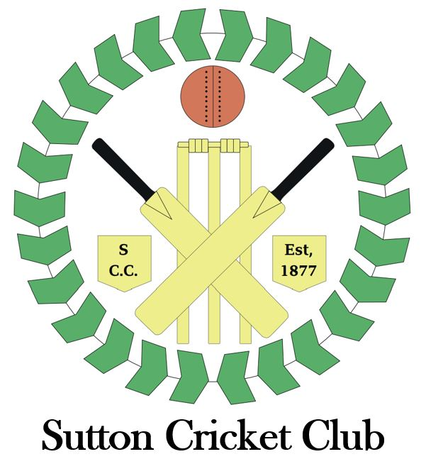

Sutton CC Images
Photographs preserved on the former club website. Individual dates and people are being identified.
Open original album →Memories of Sutton CC
Preserving photographs and memories of our players, pavilions and club events. Dates and names will be added as they are confirmed.
The club ground
One surviving photograph shows the former Sutton CC pavilion with St Andrew's Church visible beyond the ground. Club recollections say this pavilion was donated by then-President Stan Darby after an earlier building was damaged by a large roller. It remained in use until the current pavilion opened around 2000.
Do you recognise the old building, remember the roller incident, or have pictures of the opening of the present pavilion? Please get in touch.
Surviving albums
These albums remain linked to their original source while we catalogue pictures and verify any names and dates.

Photographs preserved on the former club website. Individual dates and people are being identified.
Open original album →Images from the club's presentation evening, retained as part of our photographic history.
Browse original photo albums →Help complete the story
We'd love team photos, former pavilion pictures, presentation evenings, old scoreboards and photographs of matches or events. If possible, include the approximate year and names of anyone pictured.